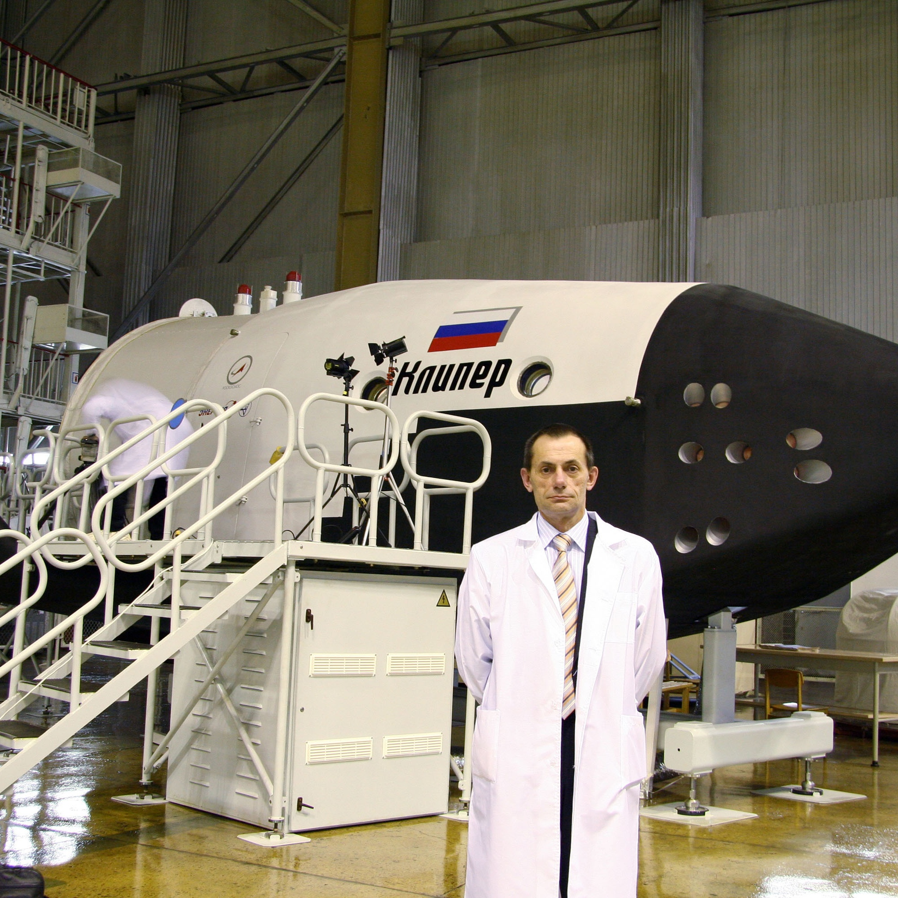
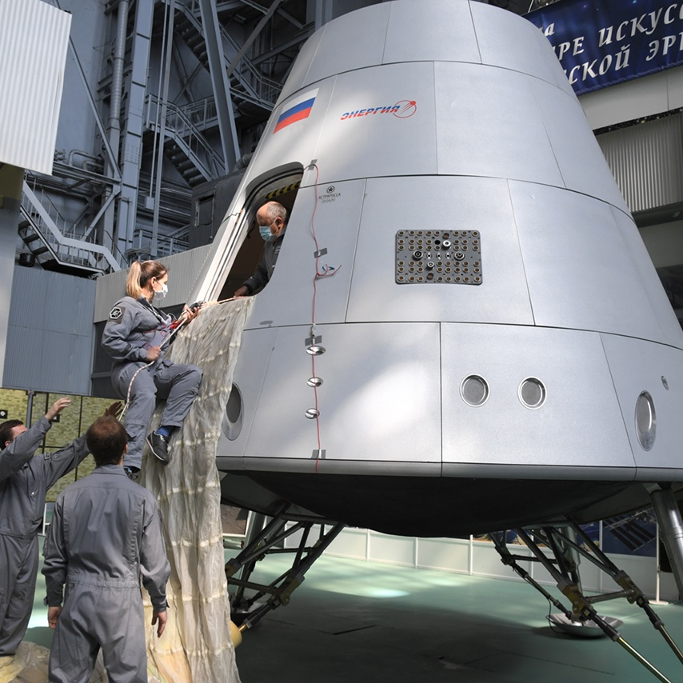
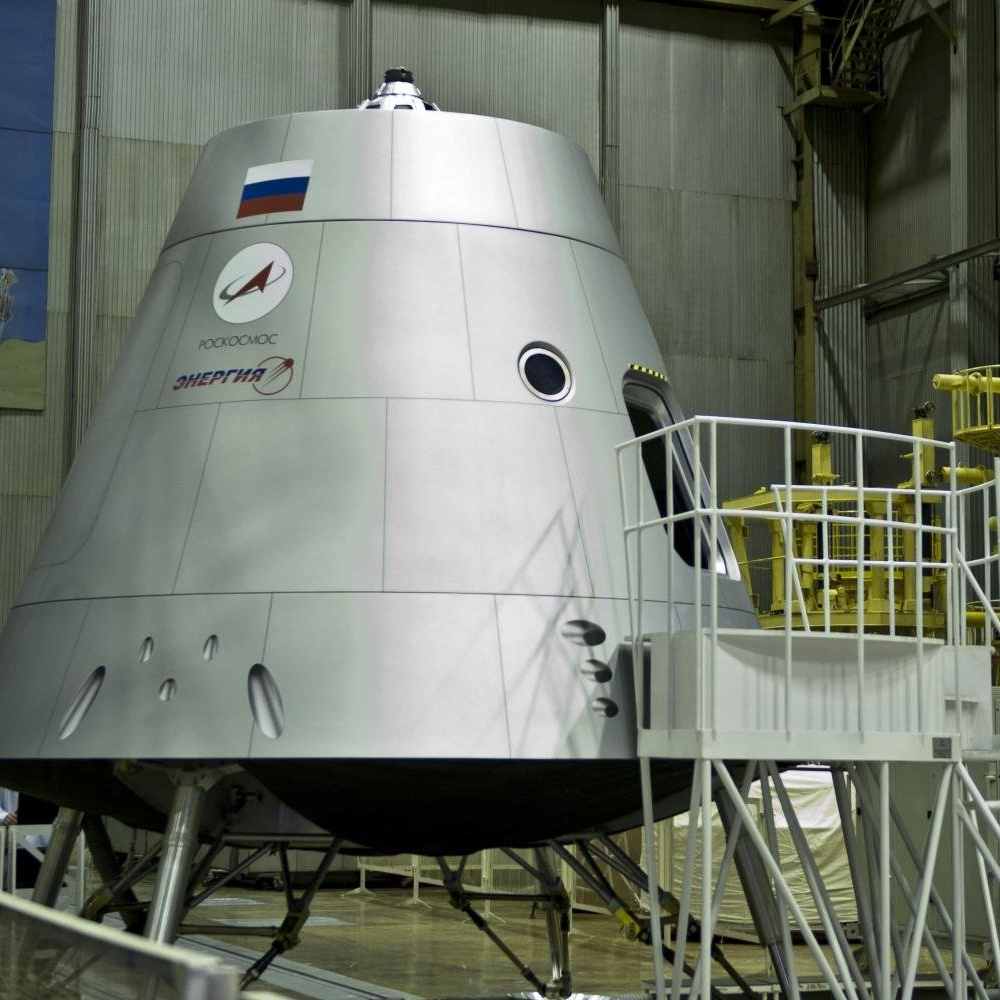

«Орел» — это многоразовый пилотируемый транспортный космический корабль нового поколения, который
разработали в ПАО «РКК „Энергия“» им. С. П. Королева. Он будет задействован для доставки людей и грузов,
в том числе к Луне. Облегченный «Орел» также может использоваться для полетов на космические станции.
Начнём с «Союза», на котором до сих пор летают наши космонавты. Этот аппарат был разработан ещё в далёкие 60-е,
во времена Лунной гонки. Тогда он строился для полёта на Луну. После ряда неудач, работы по всей лунной программе
были свёрнуты, но «Союз» никуда не ушел. После множества модификаций он стал рабочей лошадкой нашей космонавтики,
как и его тёзка — ракета-носитель «Союз».
Тем не менее в 1985 году стартовал перспективный проект «Заря». Он должен был стать ещё одним многоразовым космическим
кораблем СССР и продолжить дело Союза. Помимо повторного использования, предполагался инновационный метод посадки —
с помощью двигателей. Как это ещё недавно планировалось на корабле Crew Dragon Илона Маска. Словом, машина должна была
стать интересной. Но в 1989 году работы по проекту были остановлены. На это повлияли две вещи: а) коллапсирующая экономика
Советского Союза, б) программа «Энергия-Буран», которая съедала основные ресурсы советской космонавтики.

В девяностые и нулевые наработки по «Заре» были использованы в попытке создать совместный космический корабль с NASA,
но они потерпели неудачу. Тогда российские инженеры стали разрабатывать собственный корабль — «Клипер». Взяв всё лучшее от
«Бурана» и «Союза», они использовали концепцию «несущего корпуса». Это было изделие утюговидной формы, которое приземлялось
на аэродром. «Клипер» был отличным решением для орбиты Земли! А самое главное — он был многоразовым. Экономия шла на расходниках
(парашюты, двигатели мягкой посадки), а также на поиске и эвакуации корабля с места приземления. К тому же ресурс корпуса
был сильно больше, за счёт, опять же, посадки на ВПП. Но было две проблемы, которые и похоронили проект: cодержание наземной инфраструктуры и
посадка с орбиты Луны - на крыльях она была невозможной. Оперение просто не выдерживало вход в атмосферу с такой скорости.
Поэтому проект был закрыт, и вскоре Россия начала создавать новый космический корабль.
Разработка нового космического корабля для замены российских «Союзов» и американских «Шаттлов» началась в 2009 году.
Эскизное проектирование завершилось в 2010 году, а в 2011-м были продемонстрированы первые макеты. В 2013 году на
Международном авиационно-космическом салоне представили полноразмерные макеты нового корабля с внутренним интерьером.
В 2015 году состоялся общероссийский конкурс на название корабля, в котором могли принять участие все желающие.
По его итогам в январе 2016 года кораблю присвоили название «Федерация», однако в 2019 году он стал «Орлом».
В 2017 году РКК «Энергия» заявила о начале изготовления нового космического корабля.
Первый испытательный запуск корабля выполнен 2 марта 2019 года без экипажа. Испытательный пилотируемый полёт с двумя
астронавтами на борту начался 30 мая 2020 года, 31 мая корабль успешно пристыковался к адаптеру IDA американского модуля
«Гармония» МКС и 2 августа 2020 — успешно приводнился в Мексиканском заливе неподалеку от Пенсаколы.

Что известно о технических характеристиках «Орла»?
Численность экипажа составит от четырех до шести человек. В режиме автономного полета «Орел» сможет находиться до 30 суток,
при полете в составе орбитальной станции — до одного года. Для выведения корабля на орбиту планируется использовать
тяжелые ракеты-носители «Ангара-А5В» и «Ангара-А5П», а для полетов на Луну будет разработана ракета сверхтяжелого класса.
Как рассказывал инженерной газете «Индустрия» заместитель генерального конструктора РКК «Энергия», главный конструктор
пилотируемых комплексов Николай Брюханов, корабль будет включать возвращаемый аппарат (ВА) и двигательный отсек (ДО).
В возвращаемом аппарате сможет находиться экипаж численностью до шести человек, а также грузы массой до 500 кг.
При меньшем количестве членов экипажа масса грузов может быть увеличена.
Максимальный диаметр возвращаемого аппарата будет достигать 4,4 м, что вдвое больше диаметра корабля «Союз ТМА».
Форма ВА обусловлена необходимостью обеспечить лучшую маневренность для приведения аппарата на российские посадочные полигоны.
Источником навигационной информации «Орла» является новая аппаратура управления движением, сочетающая приемники системы
ГЛОНАСС с высокоточными гироскопическими и оптическими датчиками.
Новый корабль будет отличаться экологичностью не только благодаря возможности многоразового использования.
Так, двигательная установка его возвращаемого аппарата будет работать на газообразном кислороде и этиловом спирте.

Кроме того, материалы на основе алюминиевых сплавов, из которых изготавливается «Орел», позволят снизить на 20-30% массу
конструкции возвращаемого аппарата корабля и продлить срок его эксплуатации. В июне 2020 года Игорь Хамиц рассказал
РИА Новости, что корпус двигательного отсека корабля будет выполнен из композитных материалов. Корпус жилого отсека
возвращаемого аппарата сделают из металла. Отсеки будут транспортироваться к месту пуска раздельно.
Посадка корабля будет осуществляться с помощью парашютно-реактивной системы. При этом твердотопливные ракетные двигатели
станут гасить скорость снижения начиная с высоты около одного километра. Садиться корабль будет на амортизированные опоры,
что поможет избежать падения на бок после касания грунтовой площадки.
Вертикальная реактивная посадка позволит использовать возвращаемый аппарат до 10 раз. По предварительным данным,
посадка корабля будет осуществляться южнее широты 51,6 градуса на территории России. При необходимости «Орел» может приземлиться в океане.
В таком случае экипаж сможет ждать спасателей внутри до двух суток.
Когда начнут использовать новый космический корабль?
Как рассказал Игорь Хамиц, сейчас завершается выпуск рабочей конструкторской документации, параллельно идет изготовление и
отработка отдельных корпусных элементов, приборов и узлов корабля. Так, недавно было протестировано новое канатно-спусковое устройство для «Орла».
К 2023 году планируется запуск корабля с космодрома Восточный в беспилотном варианте. Ожидается, что во время первого
пуска «Орел» будет укомплектован штатными системами. Для испытаний изготовят несколько полноразмерных макетов перспективного
транспортного корабля и его составных частей. По программе запланировано проведение трех пусков на околоземную орбиту.
В 2025 году корабль может полететь уже с космонавтами на борту. «При этом производственный цикл никто не отменял, нам необходимо
провести полноценную экспериментальную отработку изделия. Без этого ни о каком пилотируемом запуске речь, конечно, не пойдет.
Нельзя рисковать людьми», — подчеркнул Хамиц.